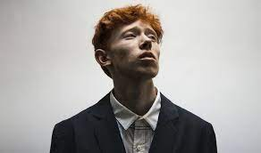
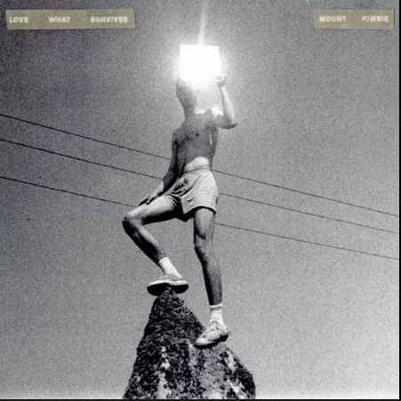
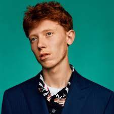

Archy Ivan Marshall, mais conhecido como King Krule (Southwark, 24 de agosto de 1994), é um cantor, rapper,
compositor e produtor musical inglês.
Ele começou a gravar músicas em 2001 sob o apelido de Zoo Kid. No ano seguinte, adotou seu nome
atual.
Lançou vários EPs e seu primeiro álbum de estúdio, 6 Feet Beneath the Moon, foi lançado em 2013 e teve uma
recepção crítica positiva. Em 13 de outubro de 2017 ele lançou seu terceiro álbum, The Ooz, e seu quarto
álbum, Man Alive!, foi lançado em 21 de fevereiro de 2020.

Início de vida:
Archy Marshall nasceu em Southwark, Londres, filho de Rachel Howard e Adam Marshall. Durante uma entrevista
com Rob Fitzpatrick, do The Guardian, Marshall afirmou que desde criança apresentava problemas de
indisciplina e se recusava a ir à escola. Durante a infância, ele passou grande parte do tempo entre a casa
de seu pai em Peckham e a casa de sua mãe em East Dulwich; sua mãe era muito menos rigorosa que seu pai, que
costumava impor regras. Marshall lembra que seu pai teve que carregá-lo para a escola, caso contrário ele se
escondia em seu quarto. Depois de completar 13 anos, recebeu um tutor particular. Mais tarde, foi aceito na
BRIT School para estudar arte, onde novamente lutou contra a indisciplina, mas logo se adaptou.

Carreira:
Durante os anos de Marshall na Forest Hill School e depois na BRIT School ao lado do colaborador Jamie Isaac
entre 2008 e 2011, ele lançou dois singles como "Zoo Kid". Em julho de 2011, durante um festival em Hyères,
na França, Marshall passou a se apresentar sob o apelido de King Krule. Mais tarde naquele ano, ele
lançou seu EP homônimo. Ao contrário de alguns relatos, seu nome artístico não é inspirado no personagem
King K. Rool da série de vídeo games Donkey Kong, mas no filme de Elvis Presley, King Creole.
Em 9 de dezembro de 2012, a BBC anunciou que King Krule havia sido indicado para o Sound of 2013. King
Krule lançou seu álbum de estréia 6 Feet Beneath the Moon em 24 de agosto de 2013, no dia de seu 19º
aniversário. Isto o destacou, especialmente nos Estados Unidos, com apresentações sendo feitas em Conan e
Late Show with David Letterman. Em fevereiro de 2014, King Krule foi capa da revista The Fader.
Em dezembro de 2015, sob o nome de Archy Marshall, ele lançou um álbum intitulado A New Place 2 Drown, que
inclui 12 músicas, um livro de artes visuais de 208 páginas e um documentário de dez minutos. Neste projeto,
ele fez uma parceria com seu irmão Jack Marshall. Em uma entrevista à NPR, Marshall disse que sua intenção
era que o álbum tivesse um componente físico, além de algo para os olhos e os ouvidos. Ele optou em lançar o
álbum sob o nome de Archy Marshall para diferenciar os dois gêneros musicais diferentes, afirmando que
pensou no A New Place 2 Drown como um álbum de hip hop em vez do dark alternativo/jazz de 6 Feet Beneath the
Moon.

Vida pessoal
Marshall está em um relacionamento com a fotógrafa inglesa Charlotte Patmore. Patmore trabalha com ele em
projetos de fotografia e videografia há vários anos e está diretamente envolvida em vários de seus vídeo
clipes.
Em 14 de março de 2019, eles tiveram sua primeira filha, Marina Marshall. O nascimento foi anunciado em uma
publicação na conta do Instagram de Patmore em 29 de março.[19]